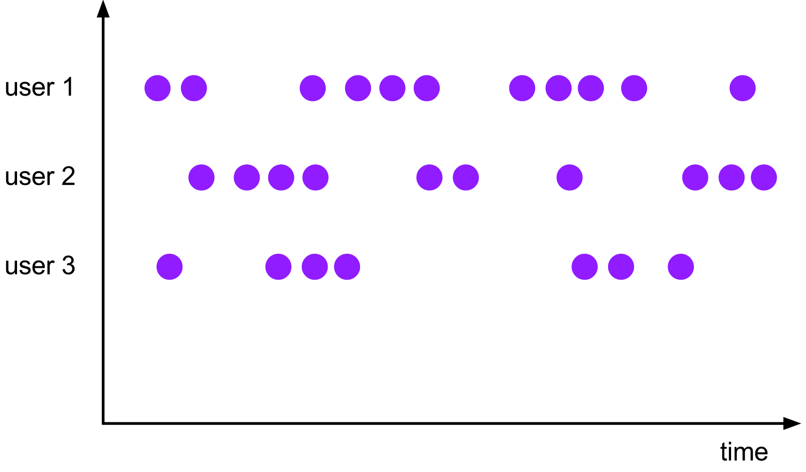

流式计算简介
流式计算背景
- 流式数据是大数据环境下的一种数据形态，其理论诞生于20世纪末，并在云计算和物联网发展下逐步成为当前的研究热点。流式数据与传统的数据是相对的。与静态、批处理和持久化的数据库相比，流式计算以连续、无边界和瞬时性为特征，适合高速并发和大规模数据实时处理的场景。当前大数据环境下的许多应用呈现多源并发、数据汇聚、在线处理的特征，所以实时数据处理的相关研究迅速发展，并在许多关键领域，如传感网络、金融、医疗、交通和军事领域得到了广泛的应用。
流式计算理论概念
流
流分为有界流和无界流。
无界流 有定义流的开始，但没有定义流的结束。它们会无休止地产生数据。无界流的数据必须持续处理，即数据被摄取后需要立刻处理。我们不能等到所有数据都到达再处理，因为输入是无限的，在任何时候输入都不会完成。处理无界数据通常要求以特定顺序摄取事件，例如事件发生的顺序，以便能够推断结果的完整性。
有界流 有定义流的开始，也有定义流的结束。有界流可以在摄取所有数据后再进行计算。有界流所有数据可以被排序，所以并不需要有序摄取。有界流处理通常被称为批处理
时间
在流数据处理的体系中，时间是一个重要的概念。总体来说，可分为以下三种时间：
事件时间：即事件实际发生的时间。更准确地说，每一个事件都有一个与它相关的时间戳，并且时间戳是数据记录的一部分（比如手机或者服务器的记录）。事件时间其实就是时间戳。处理时间，即事件被处理的时间。
处理时间：其实就是处理事件的机器所测量的时间
摄取时间：也叫作进入时间。它指的是事件进入流处理框架的时间
窗口
窗口是一种机制，它用于将许多事件按照时间或者其他特征分组，从而将每一组作为整体进行分析（比如求和）.窗口（Window）就是从Streaming 到 batch 的一个桥梁.
1）Tumbling window（滚动窗口）2）Sliding Windows（滑动窗口）

3）Session Windows（会话窗口）
4）Global Windows

watermark（水印）
在使用EventTime处理Stream数据的时候会遇到数据乱序的问题，流处理从Event（事件）产生，流经Source，再到Operator，这中间需要一定的时间。虽然大部分情况下，传输到Operator的数据都是按照事件产生的时间顺序来的，但是也不排除由于网络延迟等原因而导致乱序的产生，特别是使用Kafka的时候，多个分区之间的数据无法保证有序。因此，在进行Window计算的时候，不能无限期地等下去，必须要有个机制来保证在特定的时间后，必须触发Window进行计算，这个特别的机制就是Watermark。Watermark是用于处理乱序事件的, 是用来定义延迟触发窗口操作的时间的。
1
2
3
4
5
6
7假设数据流为： 3 -> 5 -> 4 -> 7
假设窗口为[0,5)，[5,10)...., 延迟设置为1，
* 当第一条数据4过来的时候，此时watermark为3， 放入[0,5)窗口中，此时由于watermark小于5， 所以不会触发窗口计算，
* 接着5这条数据过来，进入窗口[5,10)中，watermark现在为4，仍然不会触发计算
* 4再进来， watermark仍然为4，放入[0,5)窗口中
* 数据7过来的时候，此时watermark就变成了6， 将7这条数据放入[5,10)的窗口，此时由于watermark大于5了， 所以[0,5)这个窗口触发计算，将计算结果发送出去，并关闭窗口， 窗口关闭的同时，窗口中的数据也会一并被删除。窗口延迟关闭
这种机制的目的是为了一定程度上等待后续延迟的数据，但并不能完全解决数据乱序的问题
状态计算
流式计算分为无状态和有状态两种情况:
无状态的计算观察每个独立事件，并根据最后一个事件输出结果。例如，流处理应用程序从传感器接收温度读数，并在温度超过90度时发出警告。
有状态的计算则会基于多个事件输出结果。例如连续三次温度超过90度时发出告警
数据处理语义
在有状态的数据处理中，如何保障数据的可靠性是一个关键点。保障数据可靠性的方式有以下三种：
at most once：这其实是没有正确性保障的委婉说法——故障发生之后，计数结果可能丢失
at least once：这表示计数结果可能大于正确值，但绝不会小于正确值。也就是说，计数程序在发生故障后可能多算，但是绝不会少算
exactly once：这指的是系统保证在发生故障后得到的计数结果与正确值一致
检查点（checkpoint）
checkpoint机制可以保证流式计算在某个算子因为某些原因 (如 异常退出)出现故障时，能够将整个应用流图的状态恢复到故障之前的某一状态，保证应用流图状态的一致性， 用于故障恢复
1
2
3
4
5假设 对流数据 1 -> 2 -> 3 -> 4 -> ... -> 100做求和的处理，
当我在累加的过程中算到50的时候， 任务挂了， 在没有checkpoint的情况下，
将整个数据流重新计算一遍即可。 如果有checkpoint的情况下，假设是在计算40的时候做的checkpint，
那么checkpint中有保存 40以及当下对应的总和820，
此时故障恢复的时候，就可以从41开始进行累加计算，避免的大量的重复计算。任务拓扑结构
描述计算子任务的先后顺序以及依赖关系。不同计算框架对其解析，分配计算资源。
流式计算使用场景
物联网（IoT）
- 设备故障告警：极其迅速感知到故障的发生，并及时进行告警。
- 实时监控：实时分析设备的监控数据，实现对设备各项指标的实时监控。
- 动态跟踪：实时跟踪并显示设备（比如汽车）的位置。
金融行业
- 欺诈探测：实时分析用户行为，并及时辨识到可疑欺诈行为。
- 客户营销：根据用户即时的行为记录，实时为客户推荐个性化的金融产品。
- 数据运营：根据业务需求灵活组合使用和业务集成，实现“数据驱动业务”。
电商行业
- 个性化精准推荐：实时掌握用户的需求和喜好，进行个性化精准推荐。
- 实时报表：多维度实时了解PV\UV、销量、销售额、地域分布等。
- 实时感知变化趋势：对商品整体的热度和关注量进行动态监测，感知商品关注度变化趋势。
开源流式计算框架介绍
Apache Storm
Apache Storm（后续简称为 Storm）是一款由 Twitter 开源的大规模分布式流计算平台，并且在2014年变成了Apache的顶层项目。毫无疑问，Storm是大规模流处理中的先行者并且逐渐成为了行业标准。Storm是一个典型的Native Streaming系统并且提供了大量底层的操作接口。另外，Storm使用了Thrift来进行拓扑的定义，并且提供了大量其他语言的接口。
Apache Spark Streaming
说到 Spark Streaming，还得从 Spark 谈起。如今在大数据的世界里，Spark 早已是众所周知的大数据处理和分析框架。Spark 在其诞生之初，由于采用内存计算和 DAG 简化处理流程的原因，使得大数据处理性能得到显著提升，一下子就将传统大数据批处理框架 Hadoop MapReduce 比了下去，取而代之成为大数据领域最耀眼的明星框架。
后来随着流计算技术的兴起，Spark 在批处理领域取得巨大成功之后，也开始将其触角延伸到流计算领域，于是诞生了 Spark Streaming。Spark Streaming 是一种建立在 Spark 批处理技术上的流计算框架，它提供了可扩展、高吞吐和错误容忍的流数据处理功能。
Apache Kafka Stream
Kafka Stream是Apache Kafka从0.10版本引入的一个新Feature。它是提供了对存储于Kafka内的数据进行流式处理和分析的功能。Kafka Stream的特点如下：
- Kafka Stream提供了一个非常简单而轻量的Library，它可以非常方便地嵌入任意Java应用中，也可以任意方式打包和部署
- 除了Kafka外，无任何外部依赖
- 充分利用Kafka分区机制实现水平扩展和顺序性保证
- 通过可容错的state store实现高效的状态操作（如windowed join和aggregation）
- 支持正好一次处理语义
- 提供记录级的处理能力，从而实现毫秒级的低延迟
- 支持基于事件时间的窗口操作，并且可处理晚到的数据（late arrival of records）
- 同时提供底层的处理原语Processor（类似于Storm的spout和bolt），以及高层抽象的DSL（类似于Spark的map/group/reduce）
Apache Flink
Apache Flink 是一个框架和分布式处理引擎，用于在无边界和有边界数据流上进行有状态的计算。Flink 能在所有常见集群环境中运行，并能以内存速度和任意规模进行计算。
- 有状态计算的Exactly-once语义。状态是指flink能够维护数据在时序上的聚类和聚合，同时它的checkpoint机制
- 支持带有事件时间（event time）语义的流处理和窗口处理。事件时间的语义使流计算的结果更加精确，尤其在事件到达无序或者延迟的情况下。
- 支持高度灵活的窗口（window）操作。支持基于time、count、session，以及data-driven的窗口操作，能很好的对现实环境中的创建的数据进行建模。
- 轻量的容错处理（ fault tolerance）。 它使得系统既能保持高的吞吐率又能保证exactly-once的一致性。通过轻量的state snapshots实现
- 支持高吞吐、低延迟、高性能的流处理
- 支持savepoints 机制（一般手动触发）。即可以将应用的运行状态保存下来；在升级应用或者处理历史数据是能够做到无状态丢失和最小停机时间。
- 支持大规模的集群模式，支持yarn、Mesos。可运行在成千上万的节点上
- 支持具有Backpressure功能的持续流模型
- Flink在JVM内部实现了自己的内存管理
- 支持迭代计算
- 支持程序自动优化：避免特定情况下Shuffle、排序等昂贵操作，中间结果进行缓存